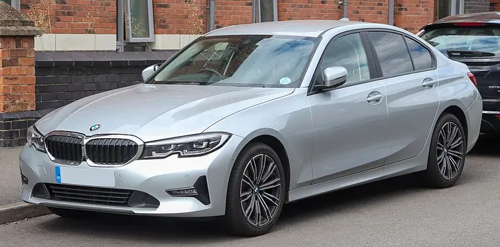
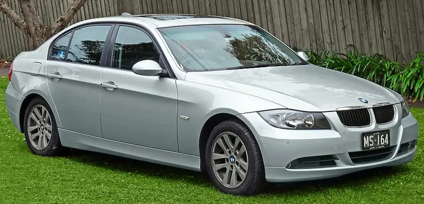
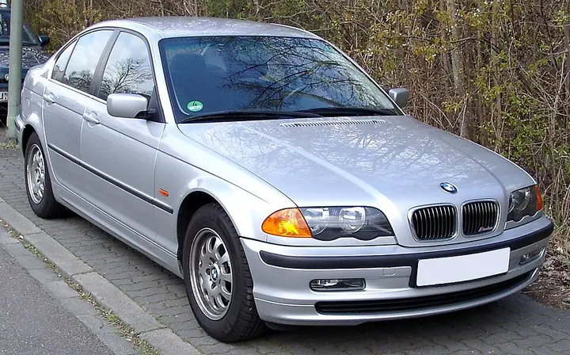
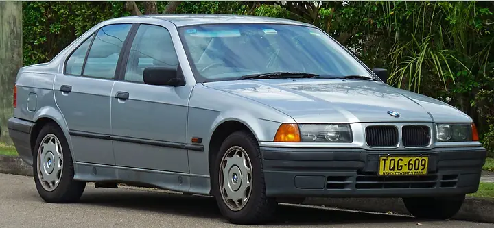
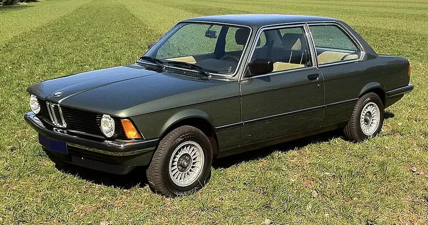

BMW 3 Series
Seventh generation (G20/G21/G28; 2018) · 2018–2026
Abstract
This generation of the BMW 3 Series is a compact executive car (D), built October 2018 – 2026 in Germany: Munich (BMW Group Plant Munich), China: Tiexi, Shenyang (BBA), Mexico: San Luis Potosí and other plants. Body styles: 4-door sedan (G20/G28), 5-door wagon (G21). Layout: Front-engine, rear-wheel-drive. Designed by Alexey Kezha, Marc Michael Markefka. This generation has its own article: BMW 3 Series (G20).


Figures of the current version from the manufacturer: BMW 3 Series Saloon technical data (BMW Group press, France), 2026-05-28.
1Specifications
| Trim levels | Série 3M Sport |
|---|---|
| Production | October 2018 – 2026 |
| Model years | 2019–2026 |
| Assembly | Germany: Munich (BMW Group Plant Munich)China: Tiexi, Shenyang (BBA)Mexico: San Luis PotosíIndia: Chennai (BMW India)Thailand: Rayong (BMW Thailand)Indonesia: Jakarta (Gaya Motor)Malaysia: Kulim, Kedah (Inokom)Brazil: AraquariVietnam: Chu Lai (THACO Truong Hai) |
| Designer | Alexey KezhaMarc Michael Markefka |
| Class | Compact executive car (D) |
| Body style | 4-door sedan (G20/G28)5-door wagon (G21) |
| Layout | Front-engine, rear-wheel-driveFront-engine, four-wheel-drive (xDrive) |
| Platform | BMW CLAR platform |
| Engine | Petrol:318i 156 ch320i xDrive 184 chM340i xDrive 392 chPlug-in hybrid:330e 292 ch330e xDrive 292 chDiesel:318d 150 ch320d xDrive 190 chM340d xDrive 340 chAll with the 8-speed automatic gearbox |
| Electric motor | 50 kW Synchronous electric motor (PHEV, 2018–2019), 80 kW Synchronous electric motor (PHEV, 2020–present) |
| Transmission | 6-speed manual (till 2022)8-speed ZF 8HP automatic |
| Battery | 12 kWh gross, 11.15 kWh net (330e) |
| Electric range | 96–101 km WLTP (330e)91–96 km WLTP (330e xDrive) |
| Wheelbase | 2,851 mm |
| Length | 4,713 mm |
| Width | 1827 mm |
| Height | 1442 mm |
| Weight | 1450–1965 kg |
| Also called | BMW i3 (battery electric, China) |
| Related | BMW M3 (G80/G81)BMW 4 Series (G22/G23)BMW 2 Series (G42)BMW X3 (G01) |
| Predecessor | BMW 3 Series (F30) |
| Successor | BMW 3 Series (G50)BMW i3 (NA0)(Electric version) |
2Versions
- Facelift
- BMW i3 (G28 BEV)
- M3
- Alpina B3 and D3
3Previous generations

_%E2%80%93_f2_20082026.jpg){kind=link}



_sedan_(2011-07-17)_01.jpg){kind=link}



_sedan_(2011-04-02)_01.jpg){kind=link}


4Generation by generation
Length +9% from the first to the last
E21 19754,355 mm
E30 19824,320 mm
E36 19904,433 mm
E46 19974,470 mm
E90 20044,520 mm
F30 20114,624 mm
G20 20184,713 mm
G50 20264,760 mm
Weight +116% from the first to the last
E21 19751,020 kg
E30 19821,080 kg
E36 19901,175 kg
E46 19971,285 kg
E90 20041,425 kg
F30 20111,385 kg
G20 20181,450 kg
G50 20262,205 kg